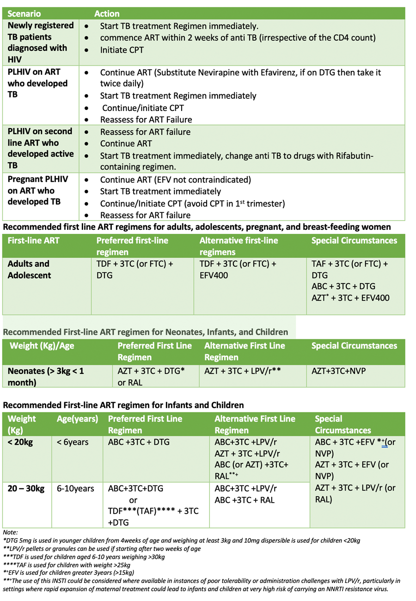

ART should be initiated in all adults living with HIV without contraindications, regardless of WHO clinical stage and CD4+ cell count.
ANTIRETROVIRAL THERAPY
ART should be initiated in all adults living with HIV without contraindications, regardless of WHO clinical stage and CD4+ cell count.
Recommendations for ART initiation in adolescents:
ART should be initiated in all children with HIV, regardless of WHO clinical stage, or at any CD4 +cell count. Infants and young children living with HIV are more likely to die within the first two years of life from the disease in the absence of any intervention.
There is strong evidence that initiation of ART within two weeks of TB treatment is associated with marked reduction in overall TB-related morbidity and mortality.
